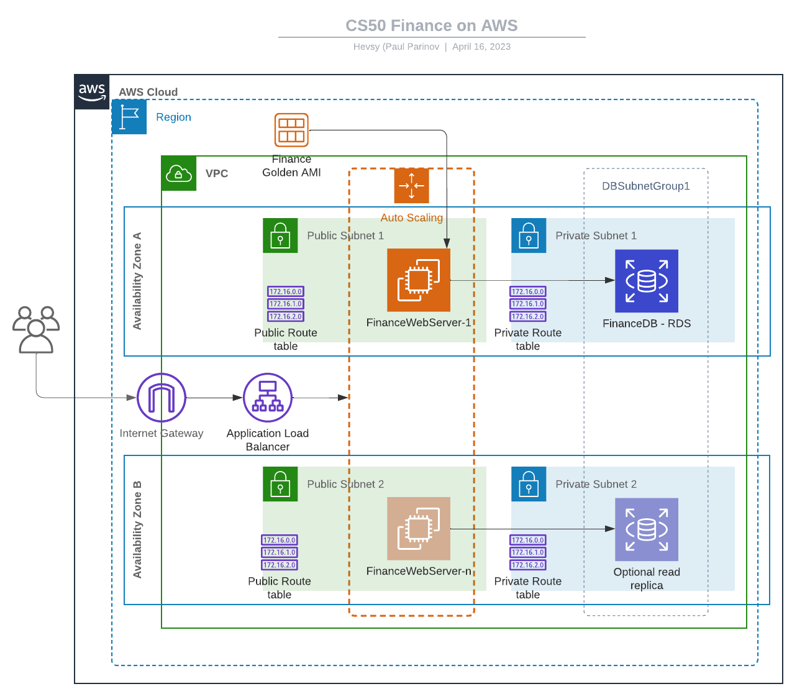

My projects
Web Application 'Finance' GitHub
This is a web-based finance application built using Flask, PostgreSQL, and IEX API for stock data. The application allows users to buy and sell stocks, and view their transaction history and portfolio. Users can also look up real-time stock prices and information.
AWS Services Used
- Amazon Elastic Compute Cloud (EC2)
- Amazon Relational Database Service (RDS) - PostgresSQL
- Amazon Virtual Private Cloud (VPC)
- Amazon Application Load Balancer
- Amazon Auto Scaling Group
For the Cloudfromation template of the AWS infreastracture refer to the cfn-finance repository
AWS Infrastructure diagram
Web Application 'Travel Companion' GitHub
Final Project for CS50x CourseA web app for storing travel plans and activities
- Built with Flask, SQLALchemy, MySQL, HTML/CSS and JavaScript
Application allows users to create notebooks for their travel plans, to store ideas, places of interest and links organised by the destinations.
Application is being designed to run in the containers on AWS Infrastructure.
Repository also contains CI/CD pipeline built with github actions, that perform unit tests of the application and deploys it to a docker container/repository.
AWS services to be used
- Amazon Virtual Private Cloud (VPC) for creating an isolated virtual network for the resources
- Amazon Elastic Container Service (ECS): to run and manage containers.
- Amazon Relational Database Service (RDS): to provision and manage a MySQL database instance.
- Amazon EC2 Container Registry (ECR) for storing Docker images
- Amazon Elastic Load Balancer (ELB) for distributing traffic across containers
- Amazon CloudWatch for monitoring the infrastructure and applications